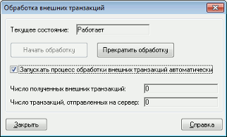

меню Сервисы / Экспорт/импорт данных / Внешние транзакции…
Данный функционал предназначен для отправки транзакций, подготовленных
программой клиента. Функционал реализован в виде библиотеки
Trans2QUIK.dll. Библиотека содержит в себе функции, описание
которых приводится ниже, при вызове которых можно: Существует два способа передачи транзакций – синхронный и асинхронный,
которые реализуются отдельными функциями: Также предусмотрена функция обратного вызова для контроля за соединениями
между терминалом QUIK и библиотекой Trans2QUIK.dll и между
Рабочим местом QUIK и сервером QUIK. Описание транзакций при импорте через API аналогично описанию транзакций при
импорте через файл. Подробнее см. Импорт
транзакций. Исключением являются следующие типы транзакций, которые не
поддерживаются библиотекой Trans2QUIK.dll: Для получения информации о заявках и сделках пользователь сначала должен
сформировать список получаемых инструментов, раздельно для заявок и сделок.
Затем выполняется запуск процедуры получения информации с помощью функций
обратного вызова. При прекращении получения информации по заявкам и сделкам
очищаются списки получаемых инструментов. Подробное описание см. Получение информации о заявках и сделках.
Настройка импорта транзакции через API осуществляется в диалоге «Обработка
внешних транзакций» (меню Сервисы / Экспорт/импорт данных / Внешние транзакции…).  Обработка внешних транзакций начинается после нажатия на кнопку «Начать
обработку». При установленном флажке «Запускать процесс обработки внешних
транзакций автоматически» сервис обработки внешних транзакций запускается
автоматически при загрузке Рабочего места QUIK.
Статистика по полученным и отправленным транзакциям отображается в полях
«Число полученных внешних транзакций» и «Число транзакций, отправленных на
сервер». См. также:Назначение
Настройки